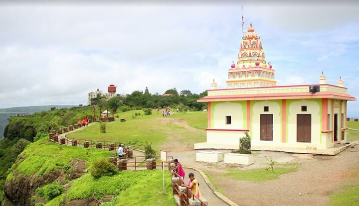

Sajjangad Fort
Originally known as Parali Fort, it was later renamed Sajjangad, meaning “Fort of Good People,” after
becoming the final abode of Samarth Ramdas, the revered spiritual mentor of Chhatrapati Shivaji Maharaj.
Today, it stands as both a revered pilgrimage site and a proud symbol of the Maratha legacy.